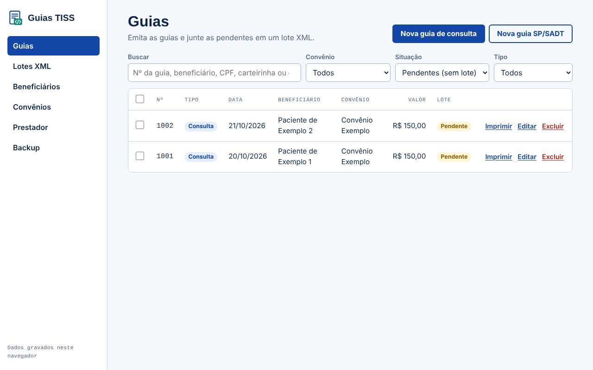
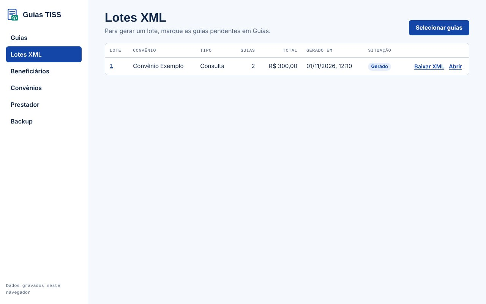
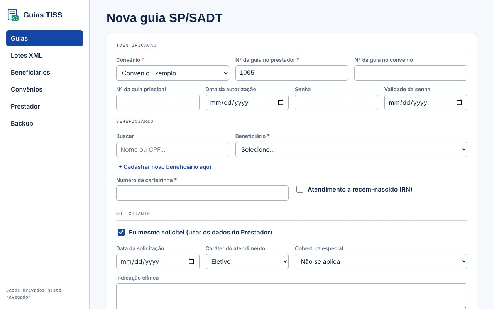

🩺
Guia de consulta e SP/SADT
Preencha e imprima no modelo da ANS para o paciente assinar.
Novo · Gerador de XML
O Guias TISS emite guia de consulta e SP/SADT no modelo da ANS e gera o lote XML para você enviar no portal do convênio. Sem instalar nada e sem digitar guia por guia no portal.

Da guia preenchida ao arquivo XML aceito pelo portal do convênio.
Preencha e imprima no modelo da ANS para o paciente assinar.
Versões 4.01, 4.02 e 4.03, com hash MD5, prontas para o upload no portal.
Cada convênio tem a sua tabela. A guia já abre com o valor certo.
Encontre o código do procedimento pelo nome, sem consultar outra tabela.
Carteirinha vinculada ao paciente: trocou o cartão, as guias pendentes atualizam.
Salve uma cópia dos seus dados e restaure quando precisar.
Na prática
As guias pendentes ficam juntas. Selecione as do mês, gere o lote e baixe o XML. O arquivo sai no nome e no formato que o padrão exige.
Abrir o Guias TISS
SP/SADT
Senha, autorização, solicitante, vários procedimentos com quantidade e fator. O total é calculado sozinho.

A mesma sequência todo mês.
Registro ANS, seu código na operadora e a versão TISS que ela usa.
Consulta ou SP/SADT, com impressão para o paciente assinar.
Selecione as guias pendentes e baixe o arquivo XML.
Faça o upload no portal do convênio e marque o lote como enviado.
Para quem é
Para consultórios, clínicas e faturistas que querem parar de digitar guia por guia no portal de cada operadora.
7 dias grátis em qualquer plano, sem cartão. Todas as funções liberadas.
R$ 70/mês
R$ 130/mês
R$ 280/mês
R$ 510/mês
Prefere não fazer o faturamento? A Remasol emite as guias, confere e envia os lotes por você. O valor é combinado de acordo com o volume de cada consultório.
Não. O Guias TISS abre no navegador (Chrome ou Edge recomendados) do seu computador.
A sua conta e o seu plano ficam guardados no servidor da Remasol (Google Firebase). As guias, os beneficiários e os lotes, por enquanto, ficam no navegador do computador em que você usa: use a tela Backup com frequência, porque limpar os dados do navegador apaga essas informações.
4.01.00, 4.02.00 e 4.03.00. A versão é escolhida no cadastro de cada convênio, conforme a exigência da operadora.
Ele gera o arquivo XML no formato exigido. O envio é feito por você, no portal da operadora, como os convênios pedem hoje.
Pelo e-mail remasolfaturetiss@gmail.com ou pelo botão de WhatsApp desta página. Conte o que aconteceu e, se puder, mande um print da tela.
Com o serviço Faturista, a Remasol emite as guias, confere e envia os lotes por você. O valor é combinado com cada consultório e aparece na sua conta quando você entra. Conheça o serviço.